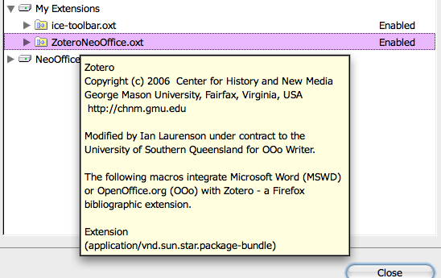
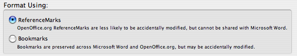

Zotero bibliographic plugin released for Word and OpenOffice.org Writer
2007-08-17
The Zotero team have released new Word and OpenOffice.org plugins for making citations and bibliographies in Word and Writer. First of all a few words about how these new plugins came about. See the warning below about how you need to be cautious with the plugins.
The screenshot tells part of the story: Ian Laurenson did the work funded by USQ via the ICE project. What that doesn't tell you is how many extra hours Ian put in to get it working, or the struggle he went through to work with another contributor who was making changes in parallel, without much management or direction from the Zotero team.

We hired Ian to work on a couple of things – one was to port the original Zotero Word plugin to work with Writer. Ian had a better idea, though. Since both apps use variations of Basic, he was able to write one bit of code that works in both, with 'compiler directives' for the different bits. This should significantly reduce the maintenance overhead.
If you want to share documents between Word and OpenOffice.org be sure to select the option to store citations using bookmarks in the document preferences.

Here's a demo done by Daniel de Byl. (He's a bit shy, still at doing these screencasts, so he doesn't talk but you'll see him add citations to an OpenOffice.org writer document and make a bibliography then convert it to Word using ICE, then continue working on it in Word. )
http://ice.usq.edu.au/media/videos/zotero_demo_01.swf
Take that EndNote!
Warning: **** The current version uses citation identifiers which are local to your Zotero database. If you add citations to a doc then give it to someone else you need to give them your Zotero database as well. This is a limitation with EndNote as well, by the way. Hope it's fixed soon.